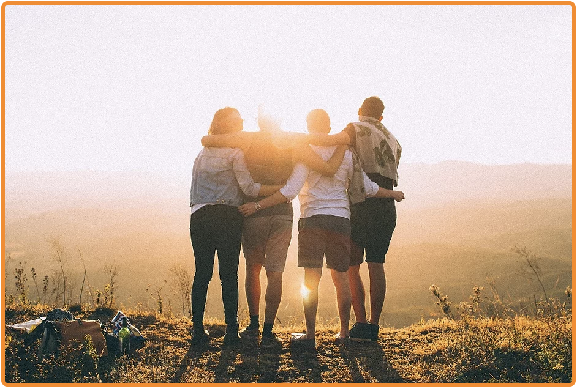

ONZE MISSIE
Wij staan voor een Nederland waarin het Hindoeïsme gewaarborgd blijft van generatie op generatie. We bieden een platform van kennis en informatie uit het Hindoeïsme en een manier om jonge generaties kennis te laten maken met hun Hindoeïsme.
Het jongerenplatform HINDYOU
Wij staan voor saamhorigheid en kennisdeling met name onder jongeren. Wij organiseren events en kleinere bijeenkomsten waar we het hindoeïsme bespreken, uitoefenen en delen met elkaar. Ook online zorgen we dat we in contact blijven. Lees meer op de HindYou pagina!
DOE MEE
Mijn Hindoeïsme gaat om het delen van kennis en ervaring. Wij zijn altijd opzoek naar mensen die ons willen helpen. Denk hierbij aan de website of het helpen bij evenementen. Uiteraard luisteren we graag naar wat je te bieden hebt. Wil je jouw steentje bijdragen? Neem contact met ons op via dit formulier.
ONTVANG ONZE NIEUWSBRIEF
Lees als éérste de nieuwste artikelen en ontvang het laatste nieuws over onze evenementen om jouw spirituele reis weer een boost te geven!
BLIJF OP DE HOOGTE
Neem deel aan onze social media kanalen. Wij zorgen ervoor dat je op de hoogte blijft van de laatste evenementen, alle feestdagen, interessante artikelen over Hindoeïsme en nog veel meer. Ons doel van social media is niet alleen informatie zenden, maar ook een online omgeving om in contact te blijven en met elkaar in gesprek te gaan.